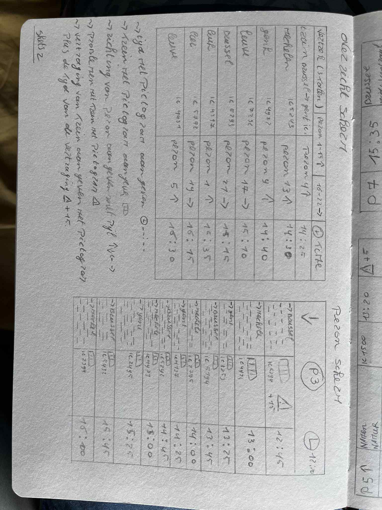
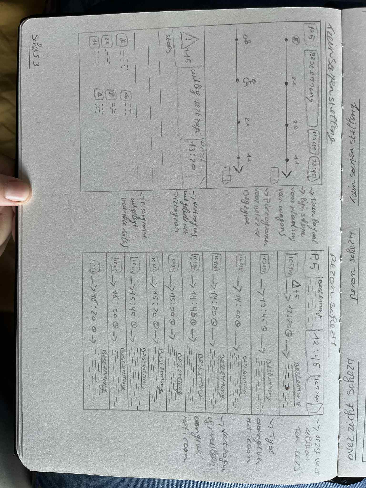
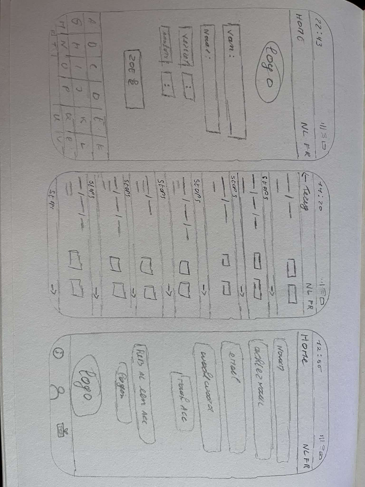
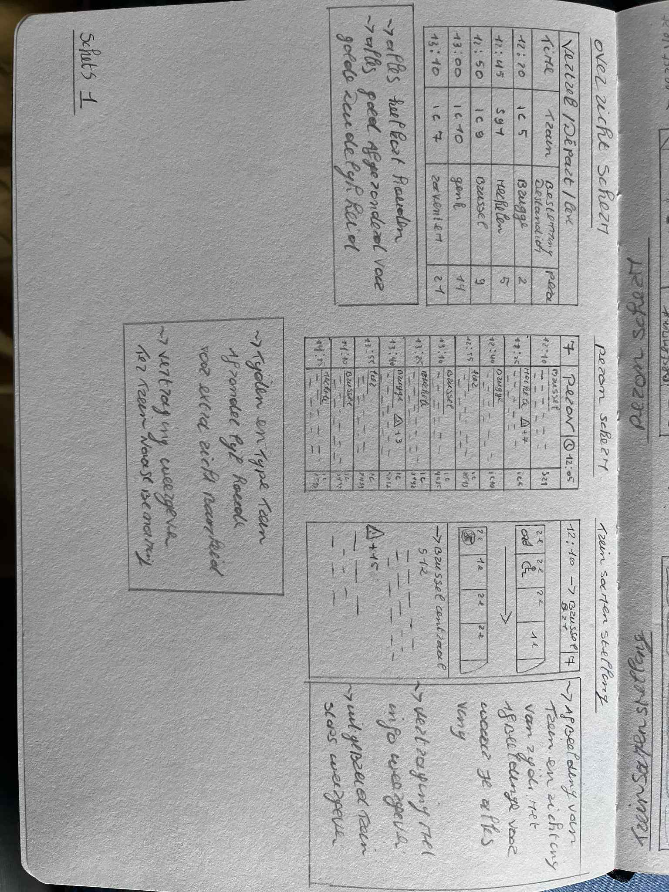
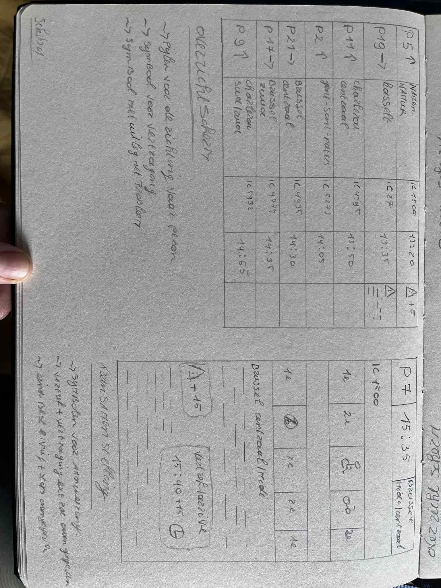
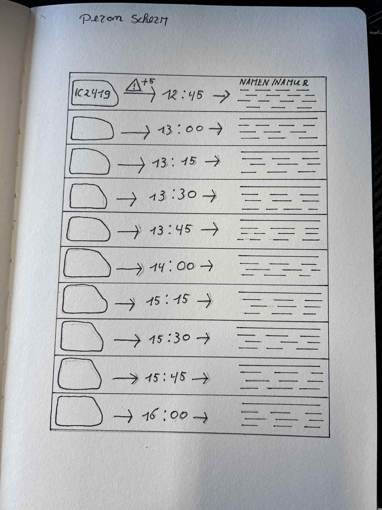
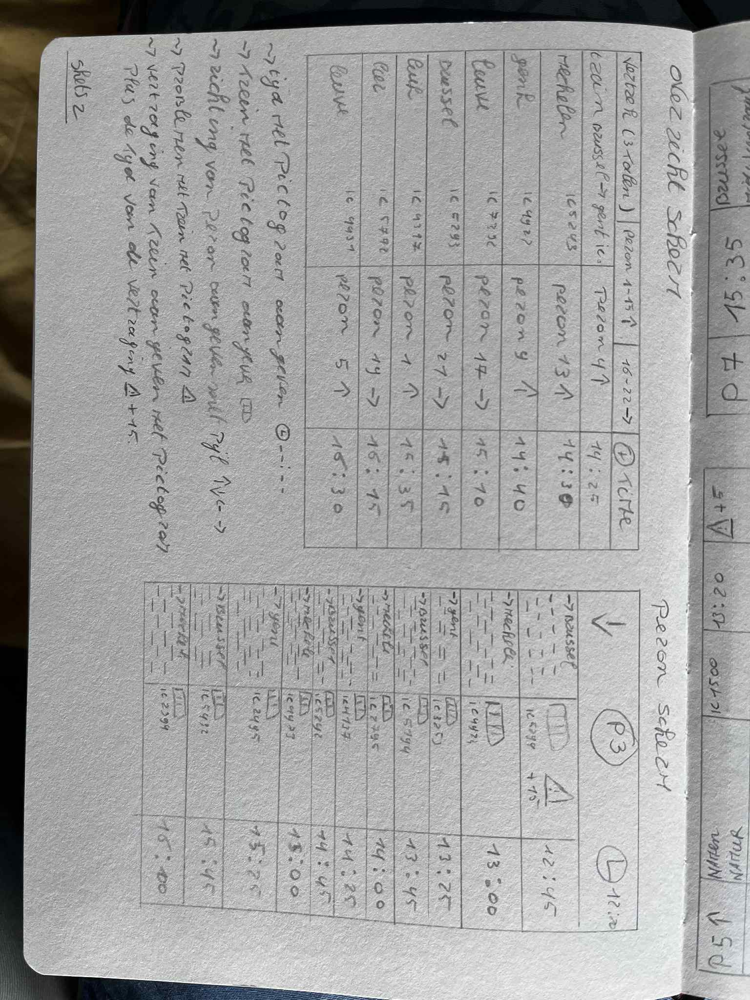
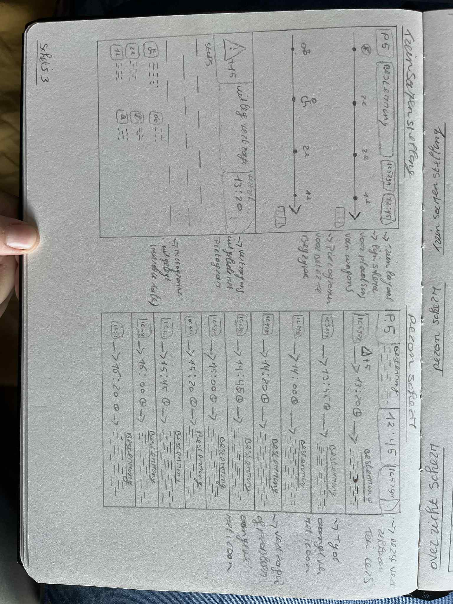
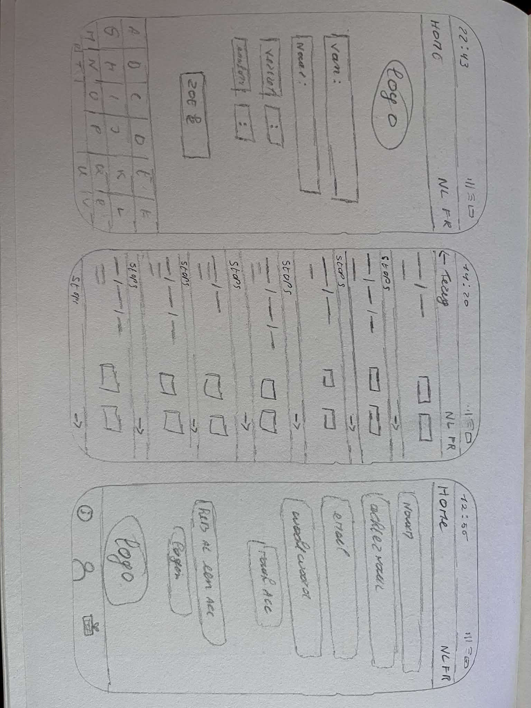
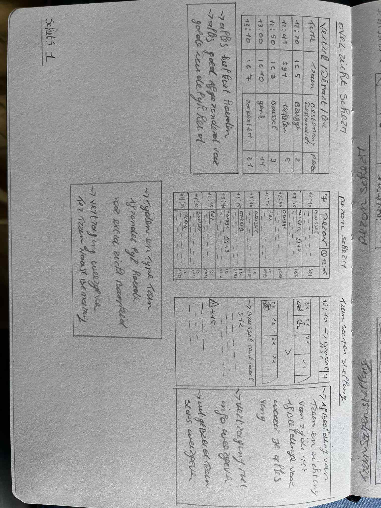
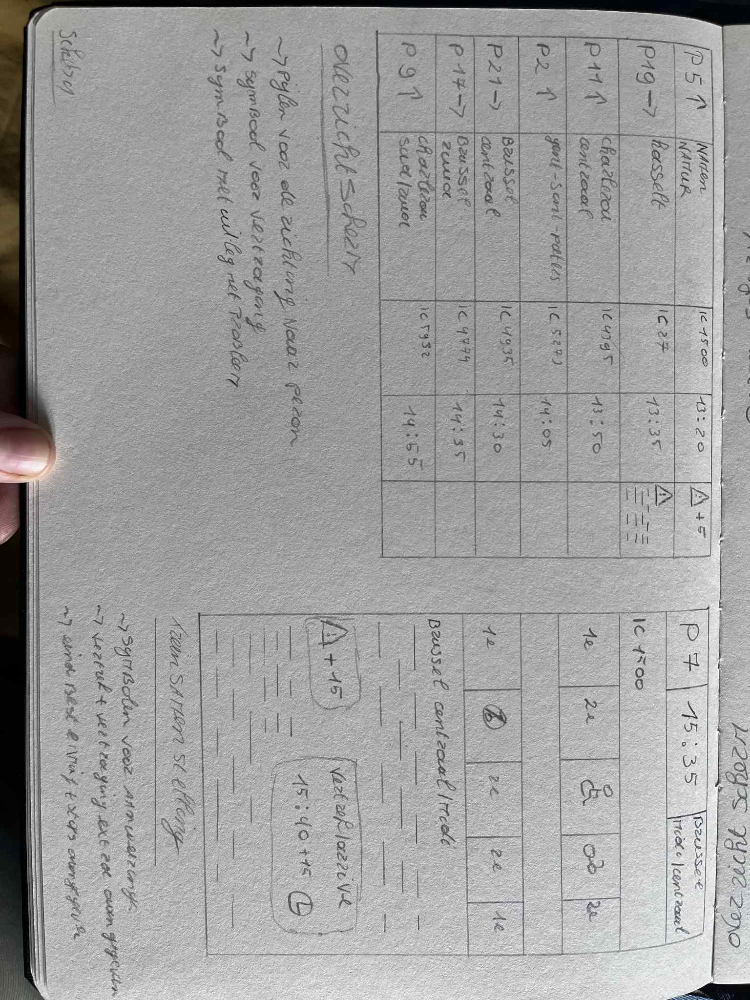
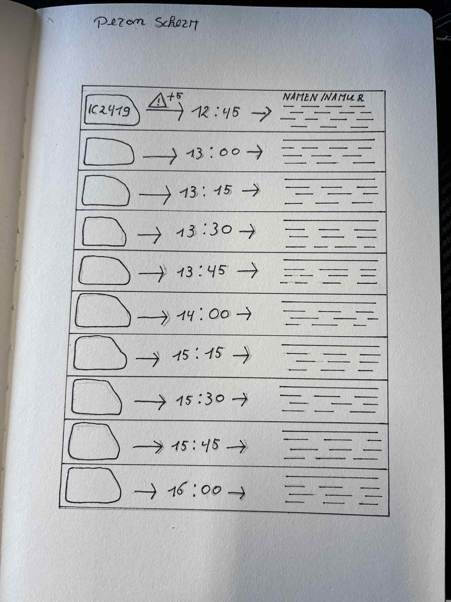
Week 3 verslag
Wat heb ik gedaan?
Deze week ben ik gestart met schetsen om stap voor stap tot een duidelijk en doordacht idee te komen. In het begin heb ik verschillende mogelijke oplossingen uitgeprobeerd en ruw uitgewerkt om te zien welke richtingen het meeste potentieel hadden. Door deze schetsen kon ik mijn ideeën beter structureren en vergelijken. Gaandeweg werd het concept steeds concreter en duidelijker. Het schetsen hielp mij om mijn gedachten visueel te maken en om beter te begrijpen hoe het uiteindelijke idee eruit zou kunnen zien. Uiteindelijk is het gelukt om één duidelijk concept te kiezen en dit visueel op papier weer te geven. Hierdoor heb ik nu een concreet en overzichtelijk idee dat als basis kan dienen voor verdere uitwerking.
Wat ging goed / moeilijk?
In het begin vond ik het moeilijk om mijn idee op papier te zetten en alle elementen erin te verwerken. Het was niet meteen duidelijk hoe ik alles overzichtelijk kon weergeven. Door meerdere schetsen te maken en verschillende uitwerkingen te proberen, kreeg ik stap voor stap meer inzicht in mijn idee. Uiteindelijk is het mij gelukt om alle belangrijke onderdelen samen te brengen in één duidelijke schets. Dit proces heeft mij geholpen om mijn concept beter te begrijpen en concreter te maken.
Volgende week
Volgende week begin ik met het uitwerken van mijn eerste digitale versie. Daarbij zal ik mijn schetsen verder verfijnen en omzetten naar een digitaal ontwerp. Dit is een belangrijke stap om mijn idee nog duidelijker en concreter te maken, zodat ik kan zien hoe het ontwerp er in een digitale context uitziet en waar er eventueel nog verbeteringen nodig zijn.